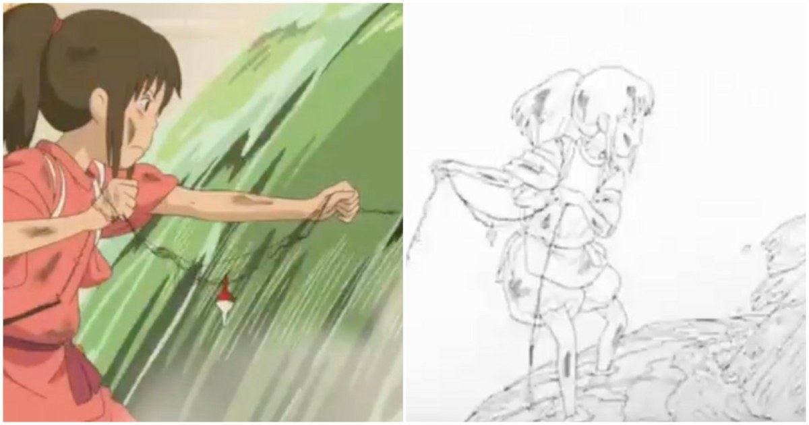

《神隱少女》動作分析：用停頓與重心變化表達拉扯阻力
動畫導演 Huu Tu Nguyen 分析千尋伸手拉物的動作，指出肌肉、身體平衡和特別停頓共同表現阻力；文章另列不同作者將吉卜力水效與場景轉成三維的案例。

動畫 ★★★★☆
完整分析
停頓與身體反應的動作設計
這段拉扯並非單純抓取後往回移動，而是讓身體對阻力作出反應、尋找平衡，再透過特別停頓強調用力。可確認的技術重點是動作節奏與身體運動的配合，本文沒有提供逐格骨架或關節角度。
二維表演對三維動畫的製作價值
推論上，製作三維角色拉扯動作時，可先觀察停頓落點、身體如何承受阻力及重心如何回復，而不是只複製手掌的位移路徑。這是從導演對平衡與肌肉運動的分析延伸出的練習方向，並非作者公布的三維綁定流程。
跨工具範例的來源與方法限制
文章提到 After Effects、Unity、Blender 與 UE5 的重現案例，但來自不同作者、也涵蓋水效和場景，不是同一份工程一路轉換。不能把這些例子拼成一套已驗證的軟體交換方法，或聲稱文中已公開完整三維水體演算法。
BRIEF｜來源已驗證；證據深度較有限，完整分析會明確區分已知資訊與待驗證事項。